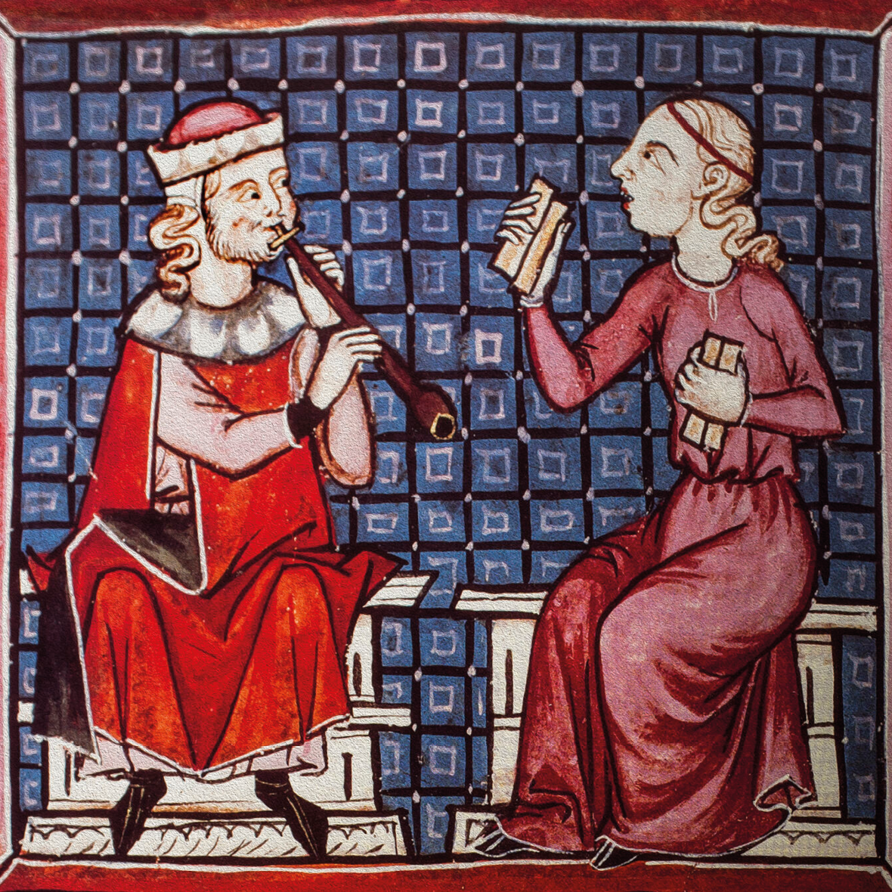

Cantigas by Alfonso X el Sabio
One of the great treasures of Spanish medieval secular music is the huge collection of Cantigas de Santa María, by Alfonso X el Sabio (1221–1284). We know that the King was not only the person who organised this collection, he also participated in it, composing some of the cantigas . This collection features almost 2,000 miniatures, providing very valuable information about everyday life, the blend of cultures in Spain and the study of instruments of the time.
| Cantiga refers to a type of poetic-musical composition in the Galician-Portuguese language. Note: although the lyrics deal with religious themes, it is considered secular music. |

Thanks to the surviving miniatures we have invaluable information about the instruments of the period and evidence that they were played whilst the songs were being sung.
Cantigas recounted the miracles of the Virgin (some were in praise of these). Cantigas are structured by continuously alternating between the chorus and different verses. At the end of each verse, the last lines use the same rhyme and music as the chorus. One of the most famous cantigas is Cantiga de Santa María n.º 100, known as «Santa María, strela do dia».
WE LISTEN AND WE DON'T JUDGE: SECULAR MIDDLE AGES
🎧 Listening 3
Listen to the following excerpt from the Cantiga de Santa María No. 100, known as ‘Santa María, strela do dia’.
Alfonso X - Santa Maria Strela do dia